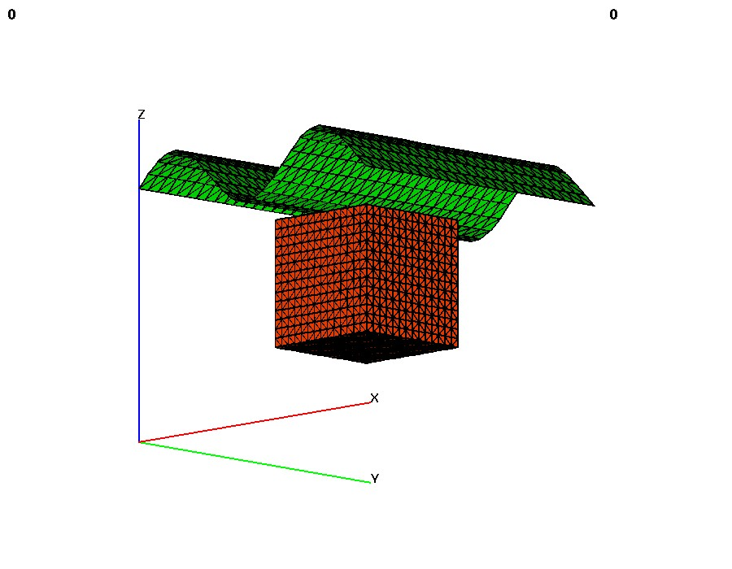

COMPUTE
FORMAT:This command contains modules that compute various attributes and functions based on one or more
mesh objects. This operation will (often) result in new attributes being added to the mesh objects. The
action of the command will be controled by the keyword in the second argument position.distance_field - keyword for distance field calculation. Determine the minimum distance from any node in
mo_source to every node in mo_sink and place the result in the node based floating point attribute,
distance_field_attribute in mo_sink. The computation is accelerated by using the kdtree search
algorithm.
signed_distance_field - keyword for signed distance field calculation. Determine the minimum distance
from any node in mo_source to every node in mo_sink and place the result in the node based floating
point attribute, distance_field_attribute in mo_sink. The computation is accelerated by using the
kdtree search algorithm. Using this option the mo_source MUST be either a triangle or quad surface
mesh object. If the surfaces form a topologically closed volume then positive, 'above' distance is in the
direction of the surface normal vector. Negative is 'below' the surface. If the surface is not a closed
volume, then the assumptions described in the surface command are used to determine what is above
and what is below the surface.
linear_transform - keyword for an extrapolation from an attribute value in a surface onto every node of
a 3D mesh. Given a 3D mesh and a 2D surface, this command will extrapolate a scalar value from that surface
onto every point of the mesh. This can be used to (for example):
- Propogate head values from a surface onto all nodes of a mesh.
- Expand a mesh to fit a surface, by propogating the appropriate spatial coordinate.
- Compute the depth relative to a topographic surface to each node of a mesh.
This is highly dependant on the spatial relation between the mesh and the surface - values from the
surface are extrapolated "downward" into the mesh in the direction specified in the command. The
direction specified in the command must be one of [zpos|zneg|ypos|yneg|xpos|xneg]. For example,
specifing zpos will result in the upper (positive
z-axis) side of the mesh having attribute values conforming exactly to those on the surface, while the
lower side of the mesh will have whatever attribute values it had previous, with all nodes in between
having attribute values distributed linearly between the two extremes. If a direction is not specified,
it will default to zpos. If an attribute is not specified, it will default to the spatial attribute appropriate
to the chosen direction (i.e. if the direction is yneg, the attribute will default to yic, the y-coordinate of
each node.) The attribute chosen must already exist in both the surface and main meshes.
Other places to look for modules that compute some standard mesh attributes include, quality, which will
compute aspect ratio and volume, cmo/addatt, which will compute normal vectors, dihedral angles, solid
angles, meadian points, Voronoi points and more. User functions can be computed with the math module.
compute/distance_field/mo_sink/mo_source/distance_field_attribute
compute/signed_distance_field/mo_sink/mo_source/distance_field_attributeEXAMPLES:
compute/linear_transform/mo_main/mo_surface/[direction/att_name]
compute / distance_field / mo_sink / mo_src / dfield
compute / signed_distance_field / mo_sink / mo_src / dfield
compute / linear_transform / mo_sink / mo_surf
(will expand top of mesh to look like the surface)
compute / linear_transform / mo_sink / mo_surf / zpos / water_head_value
 |
cmo / create / cmo_src |
 |
* |
|  |
infile buildsurf.lgi |
 |